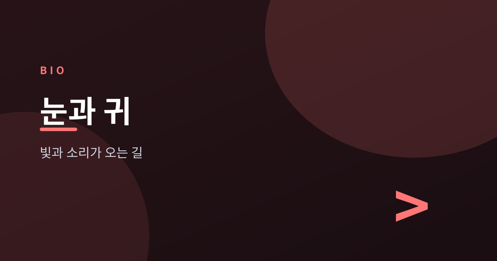
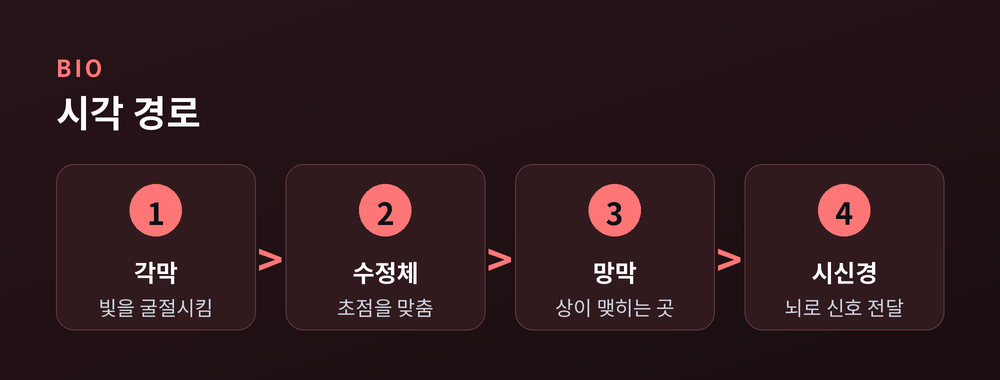
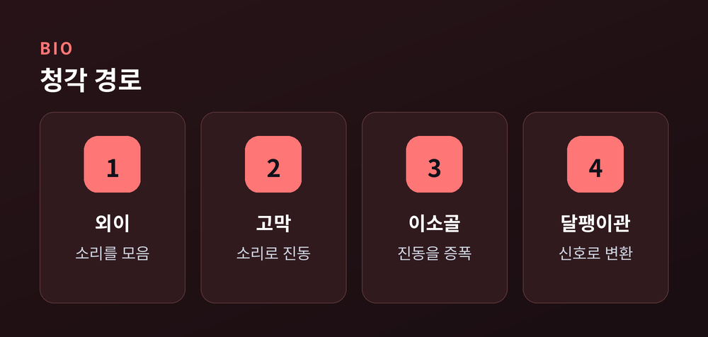
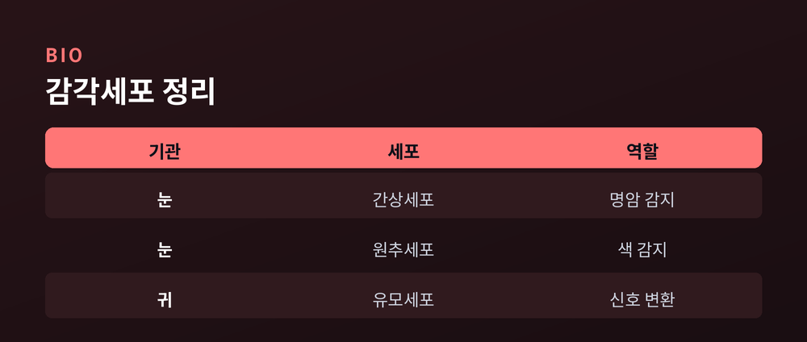
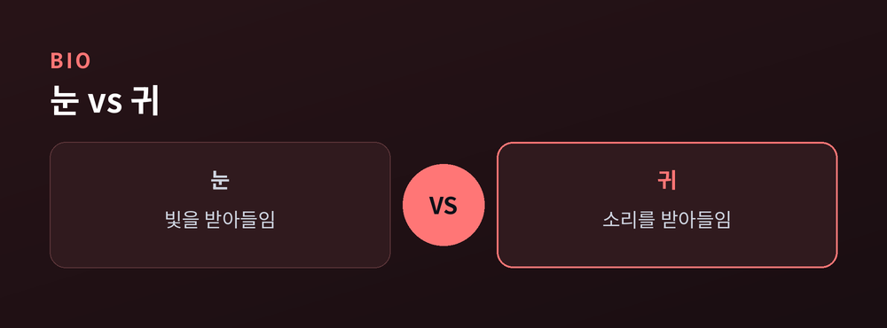

눈과 귀는 세상을 어떻게 받아들이나

오늘은 눈과 귀가 세상을 받아들이는 원리를 정리해 보겠습니다. 우리가 보고 듣는 모든 순간은 정교한 신호 변환의 결과입니다.
빛과 소리는 물리적으로 전혀 다른 자극입니다. 하지만 두 기관 모두 이 자극을 전기 신호로 바꿔 뇌에 전달한다는 점은 같습니다.
평소에는 그 과정을 의식할 일이 거의 없습니다. 눈을 뜨면 저절로 보이고, 귀를 막지 않으면 저절로 들립니다. 하지만 그 안에서는 여러 구조가 정교하게 협력하고 있습니다.
그 변환이 정확히 어디서, 어떤 순서로 일어나는지 하나씩 따라가 보겠습니다. 눈의 경로, 귀의 경로, 감각세포의 역할, 두 기관의 공통점과 차이점 순서로 짚어보겠습니다.
빛은 먼저 각막을 통과합니다. 각막은 눈 앞쪽의 투명한 막으로, 빛을 처음 굴절시킵니다.
각막을 지난 빛은 홍채 가운데의 동공을 통과합니다. 홍채는 근육을 조절해 동공의 크기를 바꾸고, 이를 통해 눈으로 들어오는 빛의 양을 조절합니다.
그다음 빛은 수정체를 지납니다. 수정체는 두께를 바꾸며 초점을 맞춥니다. 가까운 곳을 볼 때는 두꺼워지고, 먼 곳을 볼 때는 얇아집니다. 이 조절이 빠르게 일어나기에 우리는 시선을 옮길 때마다 초점을 다시 맞춘다는 사실조차 의식하지 못합니다.
이렇게 모인 빛은 눈 안쪽의 유리체를 지나 망막에 상을 맺습니다. 망막에는 두 종류의 감각세포가 있습니다. 간상세포는 명암을 감지하고, 원추세포는 색을 감지합니다.
각막은 혈관이 없는 조직입니다. 대신 눈물과 방수를 통해 산소와 영양을 공급받습니다. 그 덕분에 투명함을 유지할 수 있습니다.
동공의 크기는 밝기에 따라 즉각적으로 바뀝니다. 밝은 곳에서는 작아지고, 어두운 곳에서는 커집니다. 나이가 들면 수정체의 탄력이 줄어들어 초점 조절이 둔해지기도 합니다.
눈꺼풀과 속눈썹도 나름의 역할을 합니다. 눈꺼풀은 깜빡임으로 눈물을 고르게 퍼뜨려 각막을 촉촉하게 유지합니다. 속눈썹은 먼지나 이물질이 눈에 들어오는 것을 막아줍니다.
망막에서 만들어진 전기 신호는 시신경을 타고 뇌로 향합니다. 최종적으로 뇌 뒤쪽의 후두엽에서 이 신호를 하나의 영상으로 해석합니다.

소리는 공기의 떨림입니다. 귓바퀴가 이 떨림을 모으고, 외이도라는 통로가 고막까지 이끌어 줍니다. 이 과정은 순식간에 일어나므로, 우리는 소리를 듣는 순간 그 근원이 어디인지 곧바로 가늠할 수 있습니다.
고막은 얇은 막으로, 소리의 떨림을 그대로 받아 진동합니다. 이 진동은 망치뼈·모루뼈·등자뼈, 세 개의 작은 이소골을 지나며 증폭됩니다.
증폭된 진동은 달팽이관으로 전해집니다. 달팽이관은 액체로 채워진 나선 모양의 기관입니다. 그 안에 늘어선 유모세포가 진동을 감지해 전기 신호로 바꿉니다.
이소골은 사람 몸에서 가장 작은 뼈들입니다. 작은 크기에도 진동을 효율적으로 증폭시켜 달팽이관까지 전달합니다.
귓바퀴의 독특한 굴곡도 나름의 역할을 합니다. 소리가 어느 방향에서 오는지 가늠하는 데 도움을 줍니다. 참고로 귀 안쪽에는 청각과 별도로 평형을 담당하는 전정기관도 자리합니다.
중이에는 귀인두관이라는 통로도 있습니다. 이 통로는 중이와 목 뒤쪽을 이어 고막 안팎의 압력을 맞춰줍니다. 비행기가 이착륙할 때 귀가 먹먹해지는 것도 이 압력 차이와 관련이 있습니다.
이 신호는 청신경을 통해 뇌로 전달됩니다. 뇌 옆쪽의 측두엽이 신호를 받아 소리의 높낮이와 크기, 방향을 함께 해석합니다.

눈과 귀 모두 마지막 단계에는 감각세포가 있습니다. 이 세포들이 물리적 자극을 전기 신호로 바꿉니다. 감각세포가 없다면 아무리 빛이 밝고 소리가 커도 뇌는 이를 알아차릴 수 없습니다.
망막의 간상세포는 어두운 곳에서 특히 예민합니다. 원추세포는 밝은 곳에서 색을 구분합니다. 특히 망막 중심부인 중심와에는 원추세포가 모여 있어, 우리가 정면을 볼 때 가장 또렷한 상을 얻습니다.
반대로 망막 바깥쪽에는 간상세포가 많습니다. 그래서 흐릿한 별빛처럼 약한 빛은 오히려 정면보다 살짝 옆에서 볼 때 더 잘 느껴지기도 합니다.
망막에는 간상세포가 원추세포보다 훨씬 많은 수로 퍼져 있습니다. 그래서 어두운 곳에서는 색보다 형태와 명암이 먼저 눈에 들어옵니다.
달팽이관의 유모세포는 소리의 높낮이에 따라 다른 위치에서 반응합니다. 높은 소리는 입구 쪽에서, 낮은 소리는 안쪽에서 감지됩니다. 유모세포 끝의 미세한 섬모가 흔들리면서 전기 신호가 만들어집니다.
이 세포들은 한번 손상되면 회복이 쉽지 않습니다. 시신경이나 청신경도 마찬가지입니다. 그래서 눈과 귀를 아끼는 습관이 중요합니다.

두 감각기관은 공통점이 있습니다. 외부 자극을 받아들이고, 감각세포에서 전기 신호로 바꾸고, 신경을 통해 뇌로 보냅니다.
다른 점도 뚜렷합니다. 눈은 빛이라는 전자기파를 다루고, 귀는 소리라는 압력파를 다룹니다. 처리하는 뇌 영역도 각각 후두엽과 측두엽으로 나뉩니다.
반응하는 방식도 다릅니다. 눈은 감으면 자극이 곧바로 끊깁니다. 반면 귀는 눈꺼풀 같은 차단 장치가 없어 자는 동안에도 소리를 계속 받아들입니다.
적응하는 속도 역시 다릅니다. 어두운 곳에 막 들어가면 눈은 익숙해지기까지 시간이 걸립니다. 소리는 이보다 훨씬 빠르게 감지되고 해석됩니다.
흥미로운 공통점도 있습니다. 눈에는 시신경이 망막을 빠져나가는 지점이 있습니다. 이 지점에는 감각세포가 없어 시야에 작은 사각지대가 생깁니다. 그런데도 우리는 평소에 이를 거의 느끼지 못합니다. 뇌가 주변 정보를 바탕으로 그 빈틈을 채워 넣기 때문입니다.
눈과 귀는 세상을 그대로 전하지 않습니다. 뇌가 신호를 모아 다시 그린 세계를 보여줄 뿐입니다.
두 감각이 함께 작동할 때 우리는 비로소 온전한 장면을 경험합니다. 뇌는 시각과 청각에서 온 정보를 맞추어 하나의 상황으로 통합합니다. 영상과 소리가 어긋나면 어색함을 느끼는 것도 이 때문입니다.
대화를 나눌 때를 떠올려 보면 이해하기 쉽습니다. 우리는 상대의 목소리만 듣는 것이 아니라 입 모양과 표정도 함께 봅니다. 두 감각이 어긋나지 않을 때 우리는 비로소 상대의 말을 자연스럽게 알아듣습니다.

정리하면 이렇습니다. 눈과 귀는 각기 다른 물리적 자극을 전기 신호로 바꾸는 정교한 장치입니다. 그리고 그 신호를 마지막에 해석하는 것은 뇌입니다.
거창한 관리법이 필요하지는 않습니다. 밝은 빛을 오래 마주하지 않고, 큰 소리에 지나치게 노출되지 않는 것으로 충분합니다. 눈은 중간중간 먼 곳을 보며 쉬어 주시고, 귀는 시끄러운 환경에서 잠시 벗어나 보시길 권합니다.
화면을 오래 볼 때는 의식적으로 눈을 깜빡여 주시면 좋습니다. 눈을 자주 비비지 않는 것도 도움이 됩니다. 이어폰으로 소리를 들을 때는 음량을 지나치게 높이지 않으시길 바랍니다.
정기적인 안과·이비인후과 검진도 도움이 됩니다. 작은 이상은 검진을 통해서만 미리 알 수 있는 경우가 많습니다. 시력이나 청력의 변화는 서서히 진행되어, 본인은 알아차리기 어려운 경우도 적지 않습니다.
눈과 귀는 평소에는 있는 줄도 모르게 조용히 일합니다. 그러다 조금이라도 불편해지면 그제야 그 소중함을 실감하게 됩니다.
작은 습관들이 쌓이면 감각기관은 오래도록 제 역할을 다합니다. 오늘 본 것과 들은 것, 모두 눈과 귀가 애써 전한 결과라는 사실을 기억하시면 좋겠습니다.